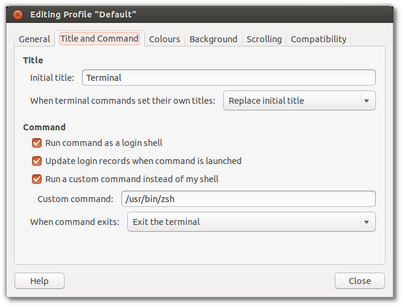

Fala pessoal, tudo bem?
As últimas semanas foram de muita correria pra mim (pretendo falar sobre isso em futura postagem) e por isso faz tempo que não publico algo no blog. Mas hoje, venho quebrar esse jejum de postagens como uma ferramenta que faz parte do meu dia-a-dia de desenvolvedor e sempre se mostra indispensável. Sim, estamos falado do terminal!
O shell padrão das distribuições é o bash. Entretanto existem outras opções, entre os quais eu cito o zsh, um sheel que após você começar, não vai conseguir mais deixar de usá-lo.
O zsh traz consigo uma grande quantidade de recursos que não estão presentes no bash, e são eles:
- autocomplete para os comandos digitados;
- correção do comando com erros de digitação;
- exibição de uma listagem de diretórios e arquivos de acordo com as letras digitidas no prompt;
- histórico de comandos compartilhado por todos os terminais;
- possibilidade de extender e adicionar novas funcionalidades e temas e plugins.
Neste post vamos explorar mais os recursos do zsh e adicionar novas funcionalidades ao mesmo através do framework prezto.
Instalação
Primeiramente, vamos instalar o zsh
sudo apt-get install zsh
Para usufruir de mais recursos, pode utilizar o framework prezto. Ele possui alguns plugins que aumentam a produtividade do zsh. Para instalá-lo, precisamos primeiramente ter o git instalado.
sudo apt-get install git
Agora realizamos o clone do repositório do prezto. Aqui usaremos o fork que fiz do repositório original, pois dessa maneira tema e plugins úteis já vem habilitados.
git clone --recursive https://github.com/mstuttgart/prezto.git "${ZDOTDIR:-$HOME}/.zprezto"
No diretório home do seu usuário, iremos criar alguns links nencessários para o funcionamento do zprezto.
ln -s ~/.zprezto/runcoms/zlogin ~/.zlogin
ln -s ~/.zprezto/runcoms/zlogout ~/.zlogout
ln -s ~/.zprezto/runcoms/zpreztorc ~/.zpreztorc
ln -s ~/.zprezto/runcoms/zprofile ~/.zprofile
ln -s ~/.zprezto/runcoms/zshenv ~/.zshenv
ln -s ~/.zprezto/runcoms/zshrc ~/.zshrc
Agora basta executarmos o zsh.
zsh
Para definir o zshcomo prompt padrão basta entrar com o comando:
sudo chsh -s /usr/bin/zsh
e abrir uma nova aba ou janela de terminal. Você pode também trocar o prompt diretamente na tela de configurações do seu terminal, conforme a imagem abaixo:

Imagem retirada do seguinte tutorial: aqui.
Plugins
Os módulos (plugins) disponíveis podem ser visualizados no diretótio modules dentro do diretório de instalação do zprezto:
~/.zprezto/modules
Os módulos que você deseja utilizar podem ser adicionados no arquivo ~/.zpreztorc.
# Set the Prezto modules to load (browse modules).
# The order matters.
zstyle ':prezto:load' pmodule \
'environment' \
'terminal' \
'editor' \
'history' \
'directory' \
'spectrum' \
'utility' \
'git' \
'completion' \
'prompt' \
'adicione o plugin aqui'
Temas
A lista de temas pode ser visualizada com o comando:
prompt -l
Para visualizar um tema em expecífico no terminal, basta utilizar o comando e em seguida abrir um nova aba no terminal.
prompt -p nomedotema
Para utilizar o tema de maneira permanente, basta adicioná-lo no arquivo ~/.zpreztorc entre aspas simples, na sessão destinada a entrada de temas:
#
# Prompt
#
# Set the prompt theme to load.
# Setting it to 'random' loads a random theme.
# Auto set to 'off' on dumb terminals.
zstyle ':prezto:module:prompt' theme 'nomedotema'
Conclusão
Além do prezto, existem outras opções de frameworks como o Oh my Zsh!. Porém, apensar do mesmo possuir um número superior de temas e plugins, o prezto é de longe o mais rápido. Utilizo ele a um bom tempo e o mesmo tem sido uma das minhas principais ferramentas de desenvolvimento.
É isso pessoal. Espero que vocês gostem de utilizar o Zsh. Até o próximo post!